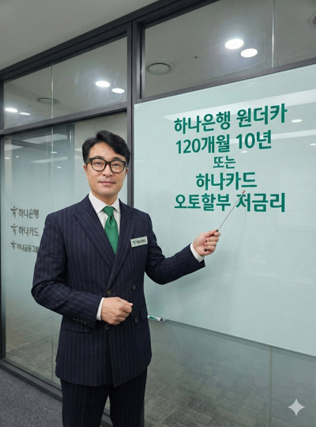

상품별 비교
은행 오토론, 카드 AUTO할부, 제조사 금융 조건을 목적에 맞게 비교합니다.

AG 천팀장KIA AUTO FINANCE차량 가격 · 선수금 · 전액할부 가능 여부
월 상환 일정 · 신용점수 관리 및 유지
고객님의 상황에 맞는 금융 조건을 함께 찾아드립니다.

쏘렌토부터 카니발, 스포티지, 셀토스, EV5까지. 하나은행 오토론 최장 120개월과 하나카드 AUTO할부 60개월을 비교하고, 실제 승인 과정에서 확인해야 할 조건을 안내합니다.
자동차 가격뿐 아니라 선수금, 기간, 신용 상태, 소득과 DSR까지 함께 살펴야 합니다. 10년 이상 자동차 금융 실무 경험을 바탕으로 실제 진행 절차와 유의점을 설명합니다.

은행 오토론, 카드 AUTO할부, 제조사 금융 조건을 목적에 맞게 비교합니다.
1차 조회 결과와 본 심사 결과가 달라질 수 있는 점을 사전에 안내합니다.
은행 승인액이 차량대금보다 적을 경우 별도 심사 조건에 따라 플랜B를 검토합니다.
60개월 저금리 비교부터 120개월 장기 상환까지, 단순한 금리보다 실제 월 납입금과 총비용을 함께 살펴보세요.


모두 다 하나 오토론 · EV 오토론 등 상품별 확인
신차 카드할부 · 금리와 상환기간 비교
기아차 구매 시 안내받은 캐피탈·카드 조건 비교
같은 원금과 금리라면 기간이 길수록 월 납입금은 낮아지지만 총이자는 증가할 수 있습니다. 일부 중도상환이나 3~5년 뒤 차량 교체 시 잔여 원금을 상환하면 이후 기간의 이자 부담을 줄일 수 있으며, 수수료 및 상환 조건은 약정별로 확인해야 합니다.
SUV·RV, 승용차, 전기차, PBV·상용차 22개 모델을 살펴보세요. 하이브리드·세부 트림은 기본 모델에서 함께 안내하며 실제 판매 여부와 금융상품 적용 대상은 개별 확인합니다.
쏘렌토 신차·하이브리드 구매 시 60개월과 120개월 월 납입금 비교
쏘렌토 할부 상담 ↗스포티지 신차·하이브리드 할부 금리와 선수금 조건 확인
스포티지 할부 상담 ↗셀토스 신차 구매 시 은행 오토론과 카드할부 조건 비교
셀토스 할부 상담 ↗카니발 신차·하이브리드 장기할부와 부족금 설계 상담
카니발 할부 상담 ↗니로 신차·하이브리드 금융상품별 이자와 월 상환 계획
니로 할부 상담 ↗타스만 구매 시 차량 용도에 따른 상품 대상과 할부 조건 확인
타스만 할부 상담 ↗카니발 하이리무진·특장차 가격과 한도, 전액할부 가능성 검토
카니발 하이리무진 할부 상담 ↗레이 신차할부 60개월·120개월 이용 조건 확인
레이 할부 상담 ↗K5 신차 구매 시 저금리·할부기간·총이자 비교
K5 할부 상담 ↗모닝 신차 구매 시 선수금과 월 납입금 상담
모닝 할부 상담 ↗K8·K8 하이브리드 120개월 은행 오토론과 부족금 검토
K8 할부 상담 ↗K9 신차할부 금리·기간·DSR 및 월 상환 여력 점검
K9 할부 상담 ↗EV5 전기차 EV 오토론 120개월과 플랜B 가능성 검토
EV5 할부 상담 ↗EV3 전기차 구매 시 은행 EV 오토론 조건 비교
EV3 할부 상담 ↗EV4 전기차 신차할부 금리와 월 납입금 확인
EV4 할부 상담 ↗EV6 전기차 60개월·120개월 금융상품 비교
EV6 할부 상담 ↗EV9 전기차 차량가·오토론 한도·DSR 상담
EV9 할부 상담 ↗레이 EV 전기차 구매 시 EV 오토론 적용 조건 확인
레이 EV 할부 상담 ↗PV5 패신저 차량 용도·상품 대상 확인 후 할부 상담
PV5 패신저 할부 상담 ↗PV5 카고 상용 목적과 금융상품 취급 가능 여부 확인
PV5 카고 할부 상담 ↗봉고Ⅲ 차량 용도·적재중량에 따른 금융상품 확인
봉고Ⅲ 할부 상담 ↗그랜버드 대형 상용차로 일반 신차 오토론 적용 여부 별도 확인
그랜버드 할부 상담 ↗※ 차종·트림의 현재 판매 여부 및 차량 용도·중량에 따른 하나은행·하나카드 금융상품 대상 여부는 별도 확인합니다. 모델별 안내는 승인 보장이 아니며, 상용차·특장차는 취급 가능 여부를 우선 확인해야 합니다.
블로그에 공개된 실제 상담·진행 사례 4건입니다. EV5와 카니발 하이브리드의 원문 수치 중 일부는 재확인이 필요해 별도로 표시했습니다. 동일 승인 결과를 보장하지 않습니다.
1차 6,000만원 조회 후 본 심사에서 3,500만원 승인. 부족금은 별도 금융 검토.
기존 오토론 이용 이력 확인과 보증보험 협의 후 재조회·최종 승인.
소득·DSR 검토 후 한도 조정. 부족금 금액은 원문 표기와 산술 차이로 확인 필요.
1차 약 4,500만원 조회 후 3,000만원 승인. 플랜B 및 탁송료 별도 안내.
간편 조회부터 최종 승인, 차량대금 결제까지 단계별로 확인합니다.
윤길A·수정B 블로그의 전체 최신 글을 발행일 기준으로 통합해 최대 6건 표시합니다. 특정 차종만 추려 보여주지 않습니다.
하나은행 오토론 상품의 대상 차량이며 심사를 통과한 경우 최장 120개월을 검토할 수 있습니다. 모델·고객별 조건이 달라 모든 차량에 적용되는 것은 아닙니다.
하나카드 AUTO할부는 해당 조건을 충족하는 비대출성 카드할부로 일반적으로 DSR 산정에서 제외되며, 은행 오토론은 대출로서 신용·소득·DSR 심사가 필요합니다. 카드 결제 가능 여부와 실제 약정을 확인해야 합니다.
차량대금과 승인 한도 및 결제 조건이 맞는 경우 검토할 수 있습니다. 부족금이 있다면 현금 또는 별도 심사를 거치는 플랜B 등을 검토할 수 있으나 전액할부를 보장하지 않습니다.
아닙니다. 1차 조회는 참고 결과이며 소득·재직·기존 대출·DSR을 확인하는 본 심사에서 한도가 달라질 수 있습니다. K8 하이브리드 사례에서는 6,000만원 조회 후 최종 3,500만원이 승인됐습니다.
동일 원금·동일 금리라면 120개월은 월 납입금이 낮아지는 대신 총이자가 커질 수 있습니다. 상품별 실제 금리, 수수료, 조기상환 계획을 함께 비교해야 합니다.
기존 부채와 보증보험 이용 이력에 따라 진행 가능 여부가 달라집니다. 기존 대출을 먼저 상환하기 전에 재신청 절차와 최종 심사 가능성을 확인하는 것이 중요합니다.
해당 차량이 상품 대상에 포함되고 고객이 심사 조건을 충족하는 경우 검토할 수 있습니다. 전기차라는 이유만으로 승인 또는 120개월 이용이 보장되지는 않습니다.
상용차는 차량 용도·중량·사업자 여부 등에 따라 금융상품 대상이 다를 수 있습니다. 일반 승용차와 동일하게 취급된다고 안내하지 않으며 상담 전에 적용 여부를 확인합니다.
차종·차량 가격·선수금·희망 기간을 알려주시면 검토할 항목과 조회 절차를 안내하겠습니다. 심사 결과를 보장하지 않습니다.